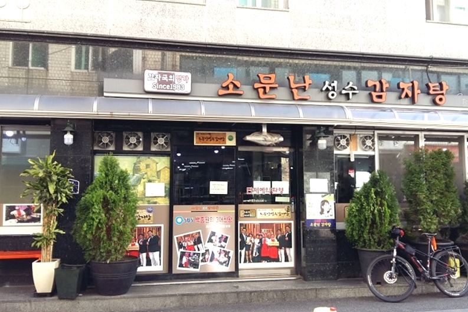
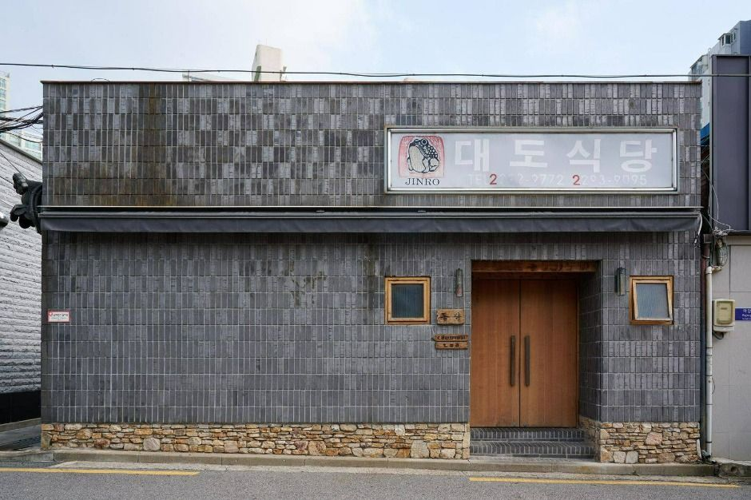
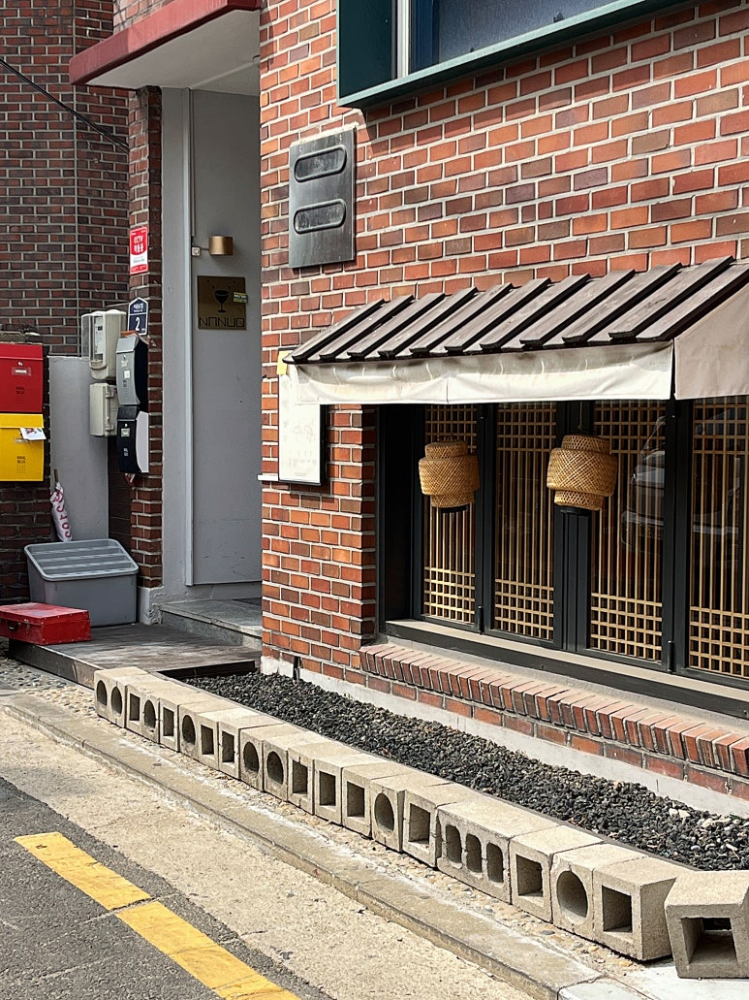

<서울가든페스타>는 서울의 매력적인 공원에서 진행되는 팝업스토어 축제로, 서울시는 규제철폐(5호, 공원 내 상행위 허용) 정책의 일환으로 그동안 공원에서 만나보지 못했던 팝업스토어(마켓, 푸드트럭)를 문화행사와 함께 즐길 수 있는 축제의 장을 마련했다. 지붕없는 도서관인 책정원, 버스킹공연, 가드닝 프로그램 등 시민들의 오감을 만족시킬 수 있는 행사를 진행하며 ‘내 삶의 건강한 챕터’ 라는 슬로건 아래 각 공원별로 특색을 살린 팝업스토어를 구성해 볼거리를 더했다. 4월 한달내내 진행되는 <서울가든페스타>는 벚꽃, 튤립, 수선화 등 봄꽃으로 가득한 공원에서 재미있는 콘텐츠와 함께 봄을 만끽할 수 있도록 운영될 예정이다.
|  |  |  |
| 소문난성수감자탕 | 대도식당 | 소와나 |
|---|